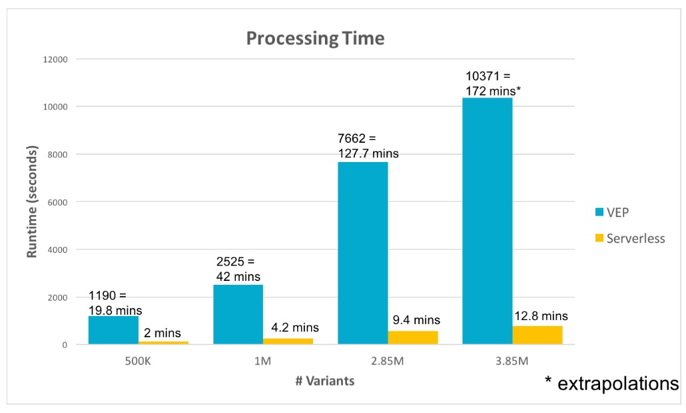

Serverless architecture for genomic variant annotation
Enabling pathology labs to annotate genomic variants more resource efficiently, while allowing the highly bespoke designing of which disease-relevant information to include.
Introduction
Understanding genomic mutations is paramount for enhancing diagnostics and treatment options. This exhaustive process of annotating genomic mutations, aided by software like VEP, is time-consuming and represents a clinical bottleneck. Diverse pathology labs require distinctive annotations, necessitating dynamic plugins to gather specific information. Serverless VEP (sVEP), which is significantly faster than traditional methods and supports custom plugins, addresses these concerns. For usage, AWS cloud infrastructure and terraform are prerequisites. sVEP, packaged as a command-line program, creates a serverless architecture within the user's cloud setup. It works securely within the user's organization, preserving data ownership and privacy in the user's account.
Motivation
The Serverless or Function-as-a-Service model is designed to streamline application creation by abstracting all aspects except your actual code. It leverages the economy of scale for efficient computing and is adopted by key cloud providers, with AWS being the primary choice for this project.
Serverless architecture has three main applications:
- Handling fluctuating workloads or sporadic low usage.
- Processing large distributed data sources.
- Building highly modular solutions that integrate external services.
This case integrates all three aspects. The workload varies among users because mutation frequencies differ between individuals. Variant prioritization software also faces fluctuating workloads due to complex prioritization algorithms needed for different regions.
VEP uses multiple internal and external data sources to annotate variants. However, it lacks parallel processing capability. In contrast, serverless architecture processes tasks in parallel using distributed data sources. Cloud architecture utilizes various ensembl and external databases like polyphen or sift for annotation and score calculations.
Having a modular architecture allows for easy integration of different modules and extensibility for future customization with external services.
Addressing these constraints, CSIRO has developed sVEP, a highly modular, resource-efficient variant annotation pipeline using cloud-native architectures. Shipped as a self-installing command-line package, sVEP allows individual pathology labs to run the software on their secure cloud account, enhancing privacy and data security. Significantly faster than traditional VEP (up to 99%), sVEP can drastically reduce the turnaround time for pathology labs, thus improving the diagnostic process.
Methods

The architecture of sVEP is designed to be extensible, and allows customization via the addition of custom plugins. Plugins can be added based on the type of input information they require. If a plugin needs data from another plugin, the setup enables extension of the existing plugin. Integrating a custom plugin requires the following steps:
- The new plugin invocation should create an additional empty file in the temporary bucket.
- This new plugin inputs data and writes output to the sVEP regions bucket.
- Once its output file is written, the plugin deletes its corresponding empty file from the temporary bucket.
These three steps ensure that the entire architecture remains synchronized with the newly added plugin. This means that the system becomes aware that all files expected from the new plugin are completed.
However, it's necessary to carefully consider the conditions for invoking the new custom plugin as this depends solely on the designer of the plugin. Also, while the architecture doesn't validate the output, it expects an output and will terminate if the expected output isn't generated.
Python is preferred for creating custom plugins; however, any language compatible with the AWS environment can be used, similar to how pluginConsequence was written in Perl. It's important to note that flexibility in terms of programming languages ensures adaptability, making the sVEP architecture truly versatile and capable of meeting diverse development needs.
Performance
The performance of sVEP and VEP was compared on multiple datasets with increasing number of variants. For these experiments, VEP was run on a server configured with 8 cores, 16GB RAM, and used 6 threads for parallel processing. Results showed that sVEP performed significantly faster, being 90-92% quicker than VEP. Notably, while the increase in runtime for larger datasets under sVEP remained a matter of minutes, VEP's increased to hours. It's worth mentioning that the largest dataset, which consisted of 3.85 million variants, was extrapolated for VEP based on previous increases in runtime.